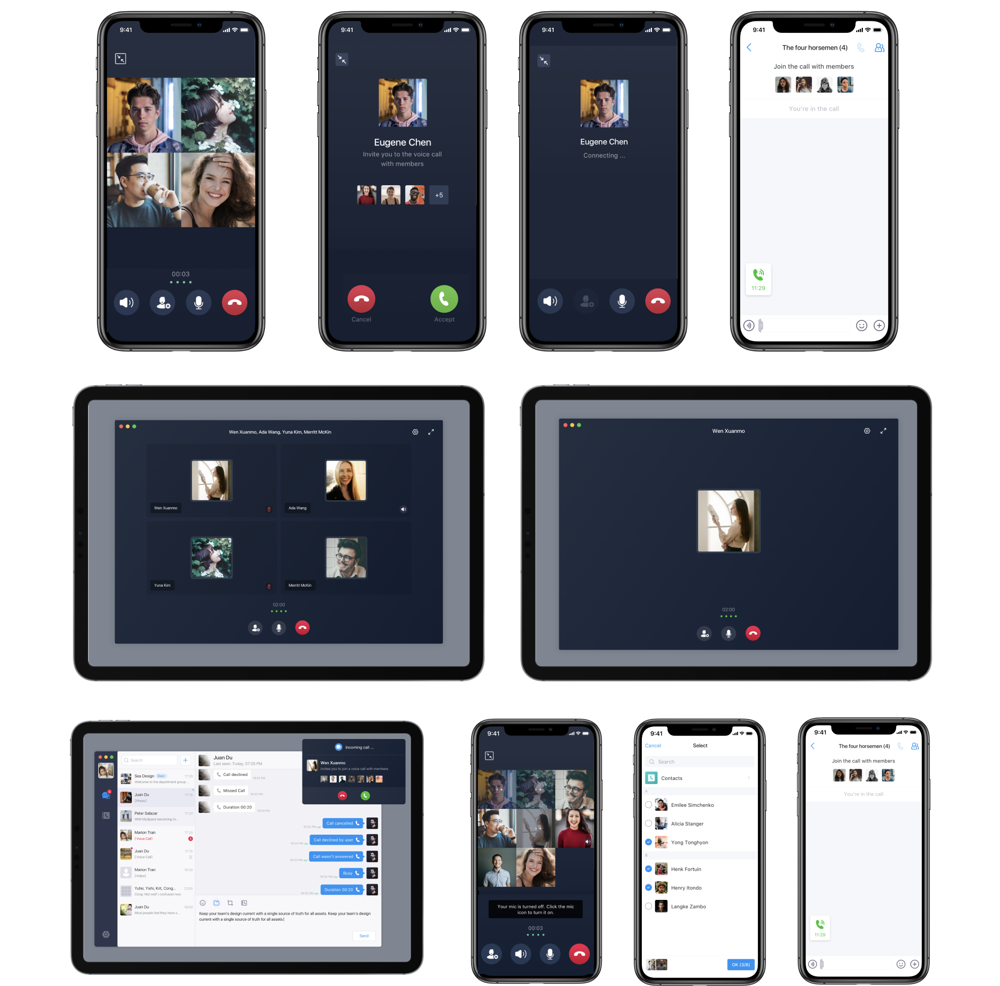
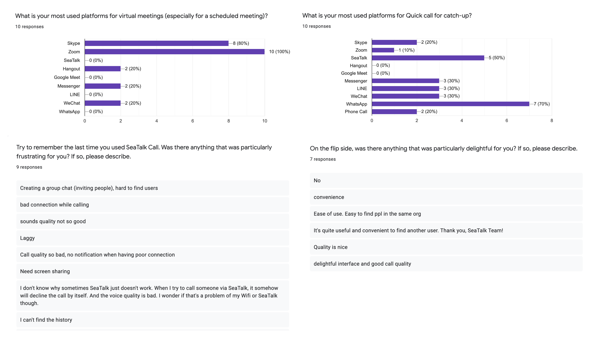
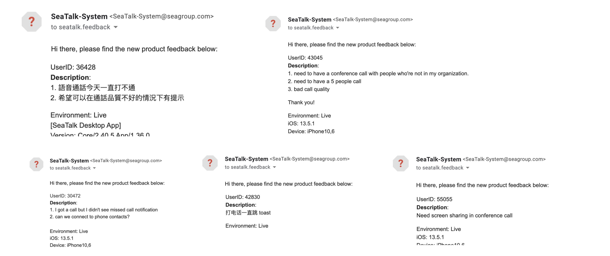
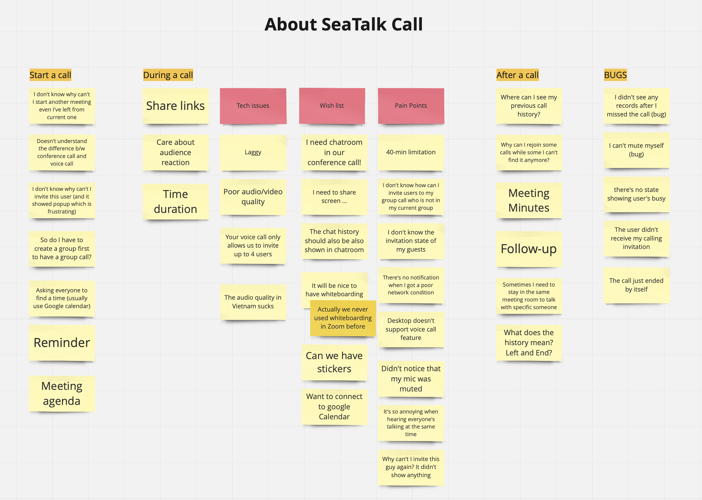
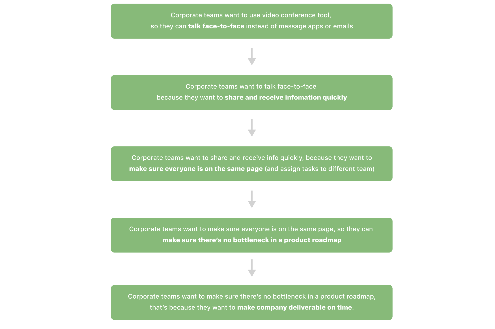
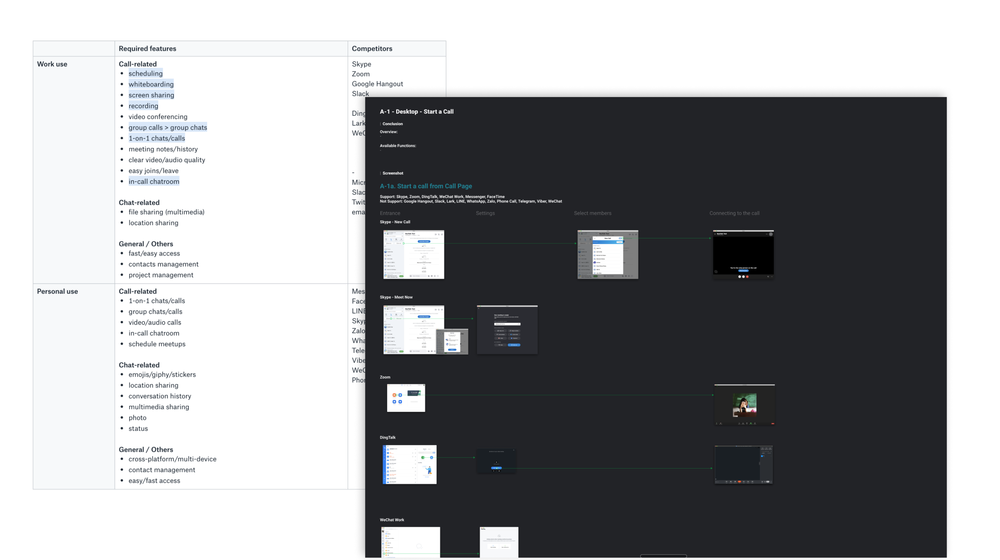
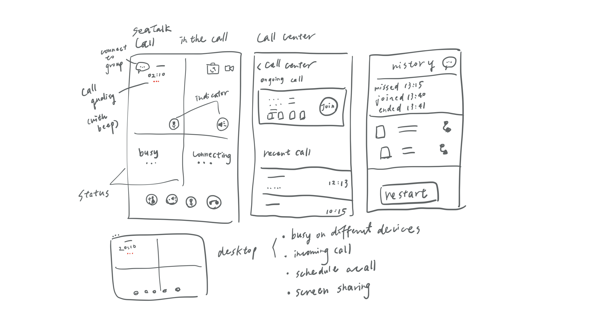
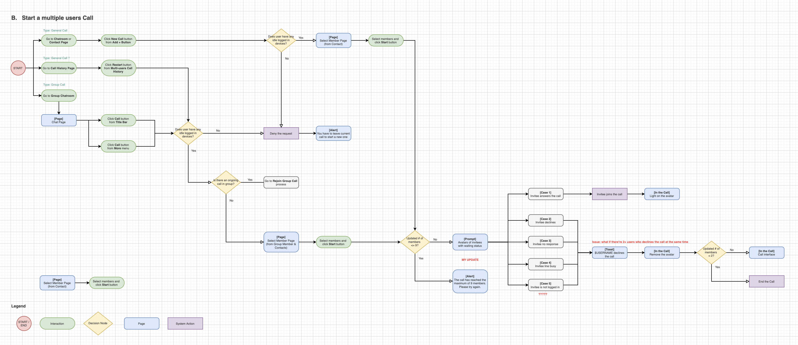
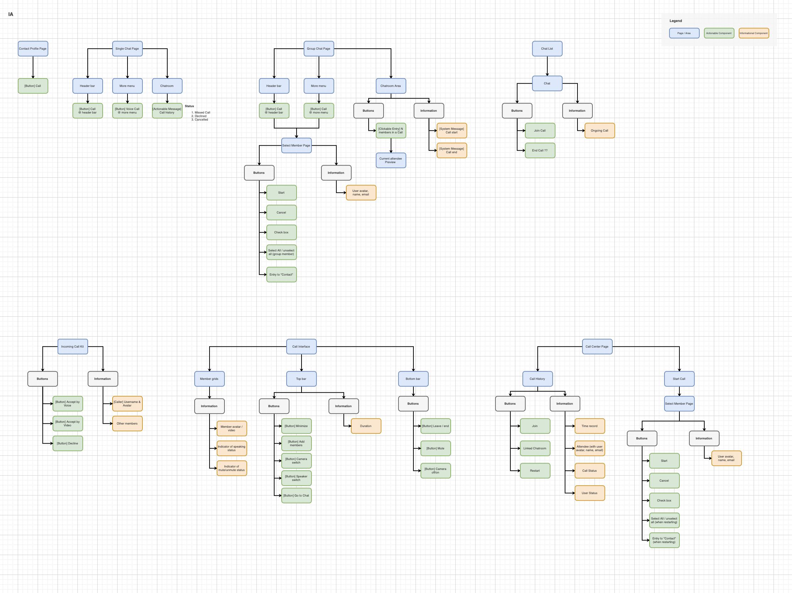
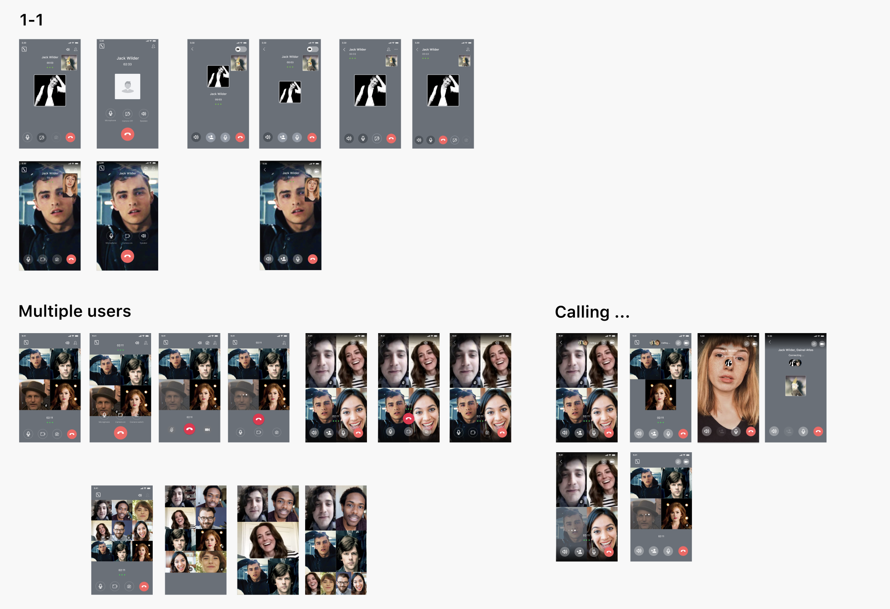

SeaTalk Call Experience
An attempt with tried-and-true ways for a better call user experience
Overview
SeaTalk is a business communication and collaboration platform developed by Sea Group (Singapore), specially designed to support digital transformation for small and medium enterprises in Southeast Asia.
In this project, we re-designed the call function in SeaTalk app (both mobile and PC version), helping alleviate the pain in onboarding, and making improvements on in-call experience.
Role & Duration
UX Designer | Sea Group
User research & questionnaire, User flows, Interaction, Prototyping & testing
JUN - SEP 2020
A bit of background
I have been working on SeaTalk App for around 1.5 years as a UX designer.
Back in 2019, before SeaTalk Team started to launch their marketing plan, SeaTalk was just one of their experimental apps, and one of my first big project as a new SeaTalk App team member was to design the voice and video call feature with Zoom (video conferencing service) integration.
We got a tight schedule at that time, which makes everything considered equally urgent. Struggling with plenty of design debt, we finally built up our first conference call feature in SeaTalk.
Ten months later, after collecting tons of suggestions, complain, and ideas, we decided to make the freshly redesigned SeaTalk Call with high audio/video quality and better user experience.
After a few weeks of work, from user interview, design iteration, to usability testing, the shiny new process and interface came out. This is what it looks like:
User Research
Survey
To understand the users, I conducted a survey using Google Forms to mainly gain an understanding of what people generally use current Call feature in SeaTalk for and who they are. Not only this, I was curious to learn what tools people usually prefer to use especially in different contexts such as work meetings or quick catchup when working from home.
Feedback (online review from current users)
I also checked our suggestion box with all the comments related to call feature, since users tend to leave reviews when they either have a really great experience and feel personally connected to the product or they’re at the complete opposite of the spectrum.
User Interview
Following the survey and feedback, I conducted interviews with 5 different users to dive deeper. I recorded, analyzed and categorized my findings into an affinity map. This process helped me to discover the following:
Usability Testing of Current Design
After interviewing the users, I gave 3 tasks for them to carry out, which I screen-recorded for further analysis.
A. Start a video group call
- Generally, the users didn’t have any trouble with this task
- 80% users started a group call by going to chatroom to search for the entrance. 20% users went to conference call page to start a conference call (since they used it before)
- 60% users clicked "Select all" when selecting members from group, the rest checked the entire list one by one.
- 60% users were confused with the toast saying "This user is not in your organization" while selecting members, so they tried to select the member again (and found the same toast ...)
B. Invite more people during a call
- 60% users clicked the "Member" icon from calling interface to look for the way. While 40% users cannot find the entrance since they were looking for the same button as they remembered from voice call, which was not involved conference video call feature.
- One user muted some others mistakenly from member list. Two users clicked re-invite button more than twice since they didn't know the status of invitation.
C. Leave a call and re-join
- Three users rejoined the call from chatroom, one user went to Call Page to find the history and join, and one user really struggled to find the way back to the call as he didn't know where to access the Chat History page (and he's confused with different call functions in SeaTalk, not realizing which call was the one he used before)
- Two users actually did not know what Call History Page was about and where it is.

Findings from interviews and surveys
Key Findings
- Most used apps for quick call to catch up: WhatsApp (Singaopre), Messenger (Taiwan, Vietnam), WeChat (China), Zalo (Vietnam, only for personal usage), Skype (if they need to share screen), and Slack
- Most used apps for virtual meetings (especially for scheduled meeting): Skype and Zoom
- Most users need to share their screen during virtual meetings
- Some users found that re-join feature is quite useful for them
Common pain points:
- Bad video/sound quality
- Limitation of number of members
- Doesn't have screen sharing function
Building Empathy & Find Opportunities
Persona & User Journey
Based on the key findings and research on the app, I developed 3 personas based on different requirements of meeting and talking, depicting the user’s behaviors, sentiment and pain-points throughout their stages of using the app.
Accroding to the personas, I depict this by using a user journey map. Below, you’ll see that the Mediator's experience started very high when he realized a need and fulfilled that need by using SeaTalk to communicate and schedule a team meeting. However, the experience steadily drops as minor frictions and major pain points hit throughout the call and his attempts to follow up after the call.
JTBD Framework
To round up the Define Phase, I quickly completed a JTBD analysis with 5WHY as well.
Competitive Products
Although in this case we tend to focus more on user research and experience, I also conducted competitive UX analysis as a reference. I found essential features required in virtual meeting apps (work use) and calling apps (personal use), and compared the task flow from those competitors as well.
Opportunities and Goals
As a redesign project, my efforts were focused on these goals:
Opportunities
- Most of the competitive products require an extra action/transition when switching from voice call to video call, which is interuptive during the call.
- User needs more interactivity and multimedia during the call.
- Bad quality (sound/video/connection) is the most prevalent in both user reviews and survey results.
Goal
- Analyze all the research data we have and a well-defined set of problems to support the redesign ideas.
- Get developers onboard at early stage (since there's a black hole of code debt ...), and help to resolve/alleviate connection issue as well.
- Create a more explanatory, clear, and efficient user experience based on our current deisgn principles.
Design
A Brainstorming Session
Brainstorming with a couple of pals revealed some problem spaces to tackle- specifically how do we improve the UX of onboarding and differentiate (or integrate) the concepts to meet the requirement of conducting meeting and having quick call during work.
Out of many solutions, I narrowed it down to these…
User & Task Flow & Information Architecture
Based on the structure of previous design, I established the user flow as below, with more error cases and unexpected behaviors as well. Also, I constructed the information Architecture to help.
 Conceptualization
After define all the flows and structure, I started sketching and creating low-fi concepts for primary use cases. After having a go-ahead from the Product Manager, developers, and Stakeholders on the mockups, we began to conduct usability tests with the low-fidelity mockups. Once we had confidence in the design, we began digitalizing designs.

Usability Testing with Lo-Fi Prototype
I did exactly the same three tasks on the same group as the those I tested on previous design, and I found 2 more users to test as well. To recap, the tasks are:
- Start a call
- Invite more people to the call
- Leave and rejoin the call
Compared to previous testing, I found that all users didn’t have any trouble to start a call and invite people from both contacts list and organization. Same as inviting more people to the call, since the in-call interface has been re-organized, the "add member" button will be easily found from the page, and the instruction is clear enough for them to complete the task.
However, for task to leave a call and re-join the call, 20% of users still don't know where to access call history, and 25% of users don't understand the usage and difference between group call history and general call history. Actually they got baffled when seeing two (or more) different types of call history pages.
Besides, I also got some insights while observing users interacting with the product. I found that most of the time, mute is the last used function in voice call (especially in 1-to-1 call) while speaker on/off function could be even more useful in this context.
Iteration, and iteration
Based on our all of our findings and the usabilty testing shown above, I narrowed our focus into 3 areas for potential improvement of my design draft:
- Improve the buttons arrangement in call interface
- Improve navigation to help and remind user of ongoing call and missed one
- Define different indicators and hint to provide information required during a call
Here's part of the different layouts and design I made in the iterative design process.
Furthermore: Implement & Challenge
Design
For me, one of the most challenged and onerous parts in this project should be the definition of all connecting cases and error states happened before, during, and after a call. Another challenge will be to create the design system from scratch for SeaTalk Desktop version, since currently we there's no comparable references in the platform.
Tech Challenges
It is noted that it's quite arduous to design the interaction and all behaviors for a voice/video call function, especially when we support multiple devices to join same or different calls at once. Not to mention tons of error cases and states needed to be defined, any changes of design arrangement, such as layout or components, will cause different tech efforts and may lead to another disaster to developers.
The Solution
My Proposed Design
After the entire iterative design process and different testing, I came up with this final design. I re-arranged the layout, moved two buttons related to camera function to the top, and changed the order of the bottom buttons. I added on the indicator of user muted and user speaking as well. Besides, to reduce distractions during the call, I moved the waiting status of invitee to the top of screen. For desktop version, I designed a separate in-call window with basic settings, status and functions as well.

The Final Design
After discussing with UI designer and PM, considering the consistency and future functions might be included, this is our final interface.
Takeaway
1. Simplicity is strength
As a designer, we are often lured by attractive, trendy and out of the box designs. In my first proposed deisgn, I tried to include as many as functions and requirements we found from our research to the interface. As Steve Jobs said, "It's not the customer's job to know what they want.", the primary goal for us is to understand users and their REAL problem, and find out the best approach to solve it.
2. Don't forget the feasibility
Usually, a UX designer is concerned with the entire process of acquiring and integrating a product, especially in usability and functions. While sometimes we may propose a perfect UI/UX design but miss the feasibility study. Keeping the developers in loop and testing solutions to find out the problems as early as possiible does save ample amount or time and re-work.